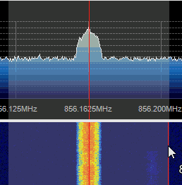

This is a WebSDR emulator, located in Your City, Country, AA00aa
It is operated by N0CALL, e-mail: you@example.com.
This is part of the UberSDR system (ubersdr.org). Best viewed with Firefox .
More information about the WebSDR project can be found on www.websdr.org.
Running UberSDR? This page layout can be installed on your station too: see the installation guide and the GitHub repository.

This is a layout based on RW3PS's template emulating Twente's WebSDR using UberSDR project, modified by SV1BTL.
Computer and operator system Linux, running UberSDR (ka9q-radio)
Receiver and Antenna RX888MK2 receiver with UberSDR
It seems Java is not installed or disabled on your computer. You need to install and/or enable it for this website to work properly.
Since Java version 7u51, Java needs to be enabled separately for each website; see http://websdr.org/java.html for instructions.
Your browser does not seem to support HTML5 WebAudio; please try a recent version of Firefox, Chrome, Opera or Safari; or switch to Java.
Background image
Chatbox:
This chatbox is intended to discuss the operation of the WebSDR.
The operators of this site disclaim any responsibility for text appearing in this chatbox.